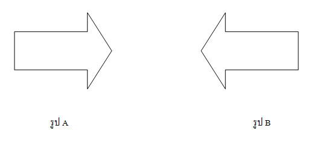
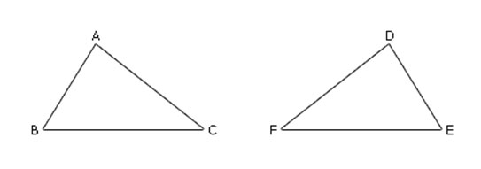
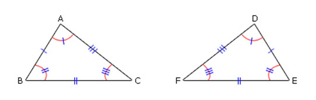
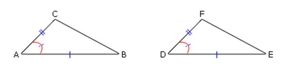
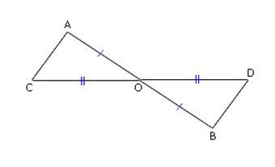
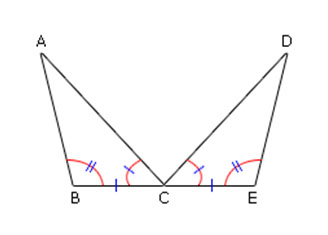
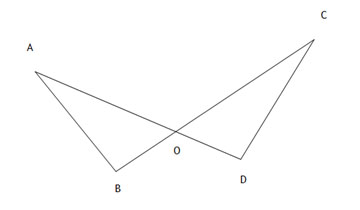
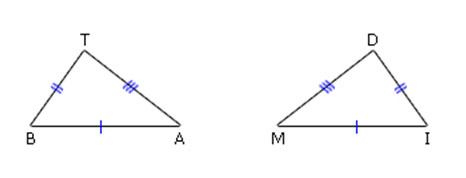

ความเท่ากันทุกประการ
ถ้ารูปเรขาคณิตสองรูปเท่ากันทุกประการ แล้วจะเคลื่อนที่รูปเรขาคณิตรูปหนึ่งไปทับอีกรูปหนึ่งได้สนิท และ ถ้าเคลื่อนที่รูปเรขาคณิตรูปหนึ่งไปทับอีกรูปหนึ่งได้สนิท แล้วรูปเรขาคณิตสองรูปนั้นจะเท่ากับทุกประการ
บทนิยาม รูปเรขาคณิตสองรูปเท่ากันทุกประการ ก็ต่อเมื่อ
เคลื่อนที่รูปหนึ่งไปทับอีกรูปหนึ่งได้สนิท
จากบทนิยามข้างต้นในบทนี้เราจะมาเรียนรู้ความเท่ากันทุกประการกัน
ความเท่ากันทุกประการของเรขาคณิต
จากรูป จะเห็นว่า รูป A สามารถเคลื่อนที่ทับรูป B ได้สนิท ในทางคณิตศาสตร์เมื่อสามารถเคลื่อนที่รูปเรขาคณิตรูปหนึ่งไปทับรูปเรขาคณิตอีกรูปหนึ่งได้สนิท จะกล่าวว่ารูปเรขาคณิตสองรูปนั้นเท่ากันทุกประการ ซึ่งเป็นไปตามบทนิยามของความเท่ากันทุกประการของรูปเรขาคณิตบนระนาบดังนี้
บทนิยาม รูปเรขาคณิตสองรูปเท่ากันทุกประการ ก็ต่อเมื่อ
เคลื่อนที่รูปหนึ่งไปทับอีกรูปหนึ่งได้สนิท
จากบทนิยามข้างต้น สามารถอธิบายได้ดังนี้
ถ้ารูปเรขาคณิตสองรูปเท่ากันทุกประการ แล้วจะเคลื่อนที่รูปเรขาคณิตรูปหนึ่งไปทับอีกรูปหนึ่งได้สนิท และ ถ้าเคลื่อนที่รูปเรขาคณิตรูปหนึ่งไปทับอีกรูปหนึ่งได้สนิท แล้วรูปเรขาคณิตสองรูปนั้นจะเท่ากับทุกประการ
เมื่อรูปเรขาคณิต A และรูปเรขาคณิต B เท่ากับทุกประการ จะเขียนว่า รูป A ≅ รูป B อ่านว่า รูป A เท่ากันทุกประการกับรูป B หรือ รูป A และรูป B เท่ากันทุกประการ
การตรวจสอบว่ารูปเรขาคณิตสองรูปใดเท่ากันทุกประการหรือไม่อาจทำได้โดยใช้กระดาษลอกลายลอกรูปหนึ่งแล้วนำไปทับอีกรูปหนึ่ง ถ้าพบว่าทับกันได้สนิทแสดงว่ารูปเรขาคณิตสองรูปนั้นเท่ากันทุกประการ
ความเท่ากันทุกประการของรูปสามเหลี่ยม
พิจารณารูปสามเหลี่ยม ABC และรูปสามเหลี่ยม DEF ซึ่งเท่ากันทุกประการ ดังรูปต่อไปนี้

เมื่อตรวจสอบความยาวของด้านคู่ที่สมนัยกัน จะได้ว่า AB = DE, BC = EF และ CA = FD
เมื่อตรวจสอบขนาดของมุมคู่ที่สมนัยกัน จะได้ว่า A ̂ = D ̂ , B ̂ =
E ̂ และ C ̂ = F ̂
โดยทั่วไป ถ้ารูปสามเหลี่ยมสองรูปเท่ากันทุกประการ แล้วด้านคู่ที่สมนัยกันและมุมคู่ที่สมนัยกันของรูปสามเหลี่ยมทั้งสองรูปนั้น มีขนาดเท่ากันเป็นคู่ ๆ
ในทางกลับกัน เมื่อรูปสามเหลี่ยม ABC และรูปสามเหลี่ยม DEF มีด้านคู่ที่สมนัยกัน ยาวเท่ากัน คือ AB = DE, BC = EF และ CA = FD และมีมุมคู่ที่สมนัยกันมีขนาดเท่ากันคือ A ̂ = D ̂ , B ̂ = E ̂ และ C ̂ = F ̂ ดังรูป
เมื่อตรวจสอบโดยการเคลื่อนที่ ∆ABC ให้ทับกับ ∆DEF จะได้ว่ารูปสามเหลี่ยมทั้งสองรูปทับกันได้สนิท นั่นคือ ∆ABC ≅ ∆DEF
โดยทั่วไป ถ้ารูปสามเหลี่ยมสองรูปมีด้านคู่ที่สมนัยกันและมุมคู่ที่สมนัยกัน มีขนาดเท่ากันเป็นคู่ๆ แล้วรูปสามเหลี่ยมทั้งสองรูปนั้นเท่ากันทุกประการ
ผลสรุปข้างต้นเป็นไปตามสมบัติต่อไปนี้
รูปสามเหลี่ยมสองรูปเท่ากันทุกประการ ก็ต่อเมื่อ ด้านคู่ที่สมนัยกันและมุมคู่ที่สมนัยกันของรูปสามเหลี่ยมทั้งสองรูปนั้น มีขนาดเท่ากันเป็นคู่ ๆ
จากสมบัติดังกล่าวนี้ เมื่อต้องการตรวจสอบว่ารูปสามเหลี่ยมสองรูปเท่ากันทุกประการหรือไม่ เราจะต้องตรวจสอบความเท่ากันทุกประการของด้านที่สมนัยกันทุกคู่ และมุมที่สมนัยกันทุกคู่ ถ้าพบว่ารูปสามเหลี่ยมสองรูปนั้นมีด้านคู่ที่สมนัยกัน 3 คู่ แต่ละคู่ยาวเท่ากัน และมุมคู่ที่สมนัยกัน 3 คู่ แต่ละคู่มีขนาดเท่ากัน แล้วรูปสามเหลี่ยมสองรูปนั้นเท่ากันทุกประการ
ในการเขียนสัญลักษณ์แสดงรูปสามเหลี่ยมสองรูปที่เท่ากันทุกประการ นิยมเขียนตัวอักษรเรียงตามลำดับของมุมคู่ที่สมนัยกันและด้านคู่ที่สมนัยกัน เช่น เมื่อรูปสามเหลี่ยม ABC เท่ากันทุกประการกับรูปสามเหลี่ยม DEF ดังรูป
จากรูป มุมคู่ที่สมนัยกันและด้านคู่ที่สมนัยกันมีขนาดเท่ากันดังนี้
A ̂ = D ̂ และ AB = DE
B ̂ = E ̂ และ BC = EF
C ̂ = F ̂ และ CA = FD
เขียนแสดงความเท่ากันทุกประการของรูปสามเหลี่ยม ได้ดังนี้ ∆ABC ≅ ∆DEF
รูปสามเหลี่ยมสองรูปที่มีความสัมพันธ์กันแบบ ด้าน มุม ด้าน
กำหนดให้รูปสามเหลี่ยมสองรูปมีด้านคู่ที่สมนัยกันยาวเท่ากัน 2 คู่ และมุมที่สมนัยกันมีขนาดเท่ากัน 1 คู่ จงสำรวจรูปสามเหลี่ยมสองรูปดังต่อไปนี้เท่ากันทุกประการหรือไม่
ผลการสำรวจข้างต้น จะเห็นว่ารูปสามเหลี่ยมสองรูปที่กำหนดให้เท่ากันทุกประการ และเมื่อพิจารณาจากรูป จะเห็นว่าเป็นการกำหนดด้านคู่ที่สมนัยกันยาวเท่ากัน 2 คู่ และมุมคู่ที่สมนัยกันมีขนาดเท่ากัน 1 คู่ โดยมุมคู่นั้นเป็นมุมในระหว่างด้านคู่ที่ยาวเท่ากัน ซึ่งกล่าวว่า รูปสามเหลี่ยมสองรูปนั้นมีความสัมพันธ์กันแบบ ด้าน – มุม – ด้าน หรือเขียน ย่อว่า ด.ม.ด. และผลที่ได้ตามมาคือ ด้านที่สมนัยกันที่เหลืออีก 1 คู่ จะยาวเท่ากัน และมุมคู่ที่สมนัยกันที่เหลืออีก 2 คู่ จะมีขนาดเท่ากันเป็นคู่ ๆ
โดยทั่วไป รูปสามเหลี่ยมสองรูปที่มีความสัมพันธ์กันแบบ ด.ม.ด. จะเท่ากันทุกประการ ซึ่งเป็นไปตามสมบัติต่อไปนี้
ถ้ารูปสามเหลี่ยมสองรูปมีความสัมพันธ์กันแบบ ด้าน – มุม – ด้าน (ด.ม.ด.) กล่าวคือ มีด้านยาวเท่ากันสองคู่ และมุมในระหว่างด้านคู่ที่ยาวเท่ากันมีขนาดเท่ากัน แล้วรูปสามเหลี่ยมสองรูปนั้นเท่ากันทุกประการ
ในการพิสูจน์ทางเรขาคณิต บางครั้งจะต้องใช้ความรู้เกี่ยวกับขนาดของมุมตรงข้ามที่กล่าวว่า "ถ้าเส้นตรงสองเส้นตัดกัน แล้วมุมตรงข้ามที่เกิดขึ้นจะมีขนาดเท่ากัน" มาประกอบด้วยดังตัวอย่าง
ตัวอย่าง จากรูป กำหนดให้ (AB) ตัดกับ (CD) ที่จุด O มี AO = BO และ CO = DO จงพิสูจน์ว่า ∆AOC ≅ ∆BOD
รูปสามเหลี่ยมสองรูปที่มีความสัมพันธ์กันแบบ มุม ด้าน มุม
กำหนดให้รูปสามเหลี่ยมสองรูป มีขนาดของมุมคู่ที่สมนัยกันเท่ากัน 2 คู่ และด้านคู่ที่สมนัยกันยาวเท่ากัน 1 คู่ จงสำรวจว่ารูปสามเหลี่ยมดังกล่าวเท่ากันทุกประการหรือไม่
ผลการสำรวจข้างต้น จะเห็นว่ารูปสามเหลี่ยมสองรูปที่กำหนดให้เท่ากันทุกประการ และเมื่อพิจารณาจากรูป จะเห็นว่าเป็นการกำหนดมุมคู่ที่สมนัยกันมีขนาดเท่ากัน 2 คู่ และด้านที่เป็นแขนร่วมของมุมคู่ที่สมนัยกันยาวเท่ากัน 1 คู่ ซึ่งกล่าวว่า รูปสามเหลี่ยมสองรูปนั้นมีความสัมพันธ์กันแบบ มุม – ด้าน – มุม หรือเขียนย่อๆว่า ม.ด.ม. และผลที่ได้ตามมาคือ ด้านที่สมนัยกันที่เหลืออีก 2 คู่ จะยาวเท่ากันเป็นคู่ ๆและมุมคู่ที่สมนัยกันที่เหลืออีก 1 คู่ จะมีขนาดเท่ากัน
โดยทั่วไป รูปสามเหลี่ยมสองรูปที่มีความสัมพันธ์กันแบบ ม.ด.ม. จะเท่ากันทุกประการ ซึ่งเป็นไปตามสมบัติต่อไปนี้
ถ้ารูปสามเหลี่ยมสองรูปมีความสัมพันธ์กันแบบ มุม – ด้าน – มุม (ม.ด.ม.) กล่าวคือ มุมที่มีขนาดเท่ากันสองคู่ และด้านซึ่งเป็นแขนร่วมทั้งสองยาวเท่ากันแล้ว รูปสามเหลี่ยมสองรูปนั้นเท่ากันทุกประการ
ตัวอย่าง จากรูป กำหนดให้ (AD) ตัดกับ (CB) ที่จุด O จงพิสูจน์ว่า BO=DO

วิธีทำ กำหนดให้ (AD) ตัดกับ (CB) ที่จุด O
ต้องการพิสูจน์ว่า BO=DO
พิสูจน์ สามเหลี่ยม ABO และ CDO
รูปสามเหลี่ยมสองรูปที่มีความสัมพันธ์กันแบบ ด้าน ด้าน ด้าน
กำหนดให้รูปสามเหลี่ยมสองรูป มีด้านคู่ที่สมนัยกันยาวเท่ากัน 3 คู่ จงสำรวจว่ารูปสามเหลี่ยมสองรูปดังกล่าวเท่ากันทุกประการหรือไม่
ผลการสำรวจข้างต้น จะเห็นว่ารูปสามเหลี่ยมสองรูปที่กำหนดให้เท่ากันทุกประการ และเมื่อพิจารณารูป จะเห็นว่าเป็นการกำหนดด้านคู่ที่สมนัยกันยาวเท่ากัน 3 คู่ ซึ่งกล่าวว่า รูปสามเหลี่ยมสองรูปนั้นมีความสัมพันธ์กันแบบ ด้าน – ด้าน – ด้าน หรือเขียนย่อๆว่า ด.ด.ด. และผลที่ได้ตามมาคือ มุมคู่ที่สมนัยกันที่เหลืออีก 3 คู่ จะมีขนาดเท่ากันเป็นคู่
โดยทั่วไป รูปสามเหลี่ยมที่มีความสัมพันธ์กันแบบ ด.ด.ด. จะเท่ากันทุกประการ ซึ่งเป็นไปตามสมบัติต่อไปนี้
ถ้ารูปสามเหลี่ยมสองรูปมีความสัมพันธ์กันแบบ ด้าน – ด้าน – ด้าน (ด.ด.ด.) กล่าวคือ มีด้านยาวเท่ากันสามคู่ แล้วรูปสามเหลี่ยมสองรูปนั้นเท่ากันทุกประการ
ในสิ่งแวดล้อมรอบตัว มีสิ่งก่อสร้างที่มีลักษณะเป็นรูปสามเหลี่ยมหน้าจั่ว เช่น
หน้าจั่วบ้านและโครงหลังคาของศาลานั่งเล่น
รูปสามเหลี่ยมหน้าจั่วมีบทนิยามดังนี้
บทนิยาม รูปสามเหลี่ยมหน้าจั่ว คือ รูปสามเหลี่ยมที่มีด้านสองด้านยาวเท่ากัน